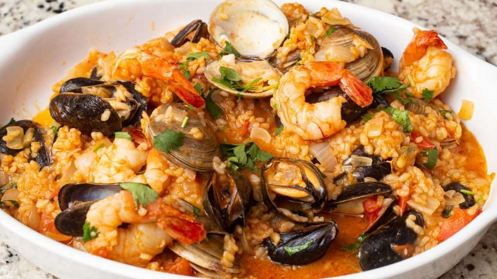

Arroz de marisco

Arroz de Marisco is a seafood classic from Portuguese Cuisine. Despite its creation being associated to a beach in Central Portugal – Praia de Vieira de Leiria, it is widely available in many restaurants across coastal Portugal. It usually comprises of a variety of shellfish, peppers, tomatoes, fresh herbs, and short-grain rice making an indulgent and delicious dish. For those that are not convinced yet, it was also selected in 2011 as one of the 7 Wonders of Portuguese Gastronomy.
Ingridients
- 500g medium sized fresh prawn – gambas
- 250g clams – amêijoas
- 400g mussels – mexilhão
- 1 medium sized red pepper – diced
- 2 large onions – diced
- 4 garlic cloves – minced
- 400g Carolino rice
- Olive oil
- 1tbsp butter
- Salt
- Fresh coriander
- Dry white wine
Steps
- Place the clams in a bowl and cover them with saltwater. Do the same with the mussels and set them aside for at least one hour, but longer if possible.
- Meanwhile, prepare the prawns: remove the head and tail, then peel each one of them. If needed, remove the dark vein located along the back of the prawn. Thoroughly rinse the peel you removed and set it aside.
- Place a tall saucepan over medium heat. Once hot, add a drizzle of olive oil, then lightly fry 1 onion and 2 garlic cloves for around 2 minutes. Add the prawn skin to the frying pan, let it fry for another 5 minutes.
- Drain and rinse the clams and mussels, use a soft brush to scrub any dirt from the shells. Add them to the saucepan where the prawn skin is being fried. Let it simmer for about 2 minutes until the shells open. Remove the clams and mussels from the saucepan, leaving the other ingredients behind as they will be the base for the broth. Discard any shells that remained closed. Set aside.
- Cover the remaining ingredients with 2 litres of boiling water. Let it simmer over low to medium heat for approximately one and a half hours. Use a hand mixer to blend everything, strain it through clean fabric or a colander with small holes.
- Place a large saucepan over medium heat. Add 1tbsp of olive oil, the remaining onion, and the bell pepper. Fry everything for around 2 minutes, stirring occasionally. Add the rice, let it cook for 2 minutes before you add 1 cup of white wine.
- Once the wine is completely absorbed, gradually add the warm broth, stirring between every addition. Make sure the liquid is fully absorbed by the rice before adding more broth.
- Meanwhile, place a frying pan over medium to high heat, add a tsp olive and fry the shrimp in batches till golden brown. Add the mussels and clams to the frying pan, and the remaining garlic. Let it cook for about 2 minutes. Deglaze it with some white wine, season with salt and pepper. We like to keep a few of the mussels and clams in the shell for aesthetic purposes, but it’s best to remove the majority of them from their shells.
- Combine the cooked rice and the shellfish. The mixture should be creamy and juicy. Add a splash more of broth and the butter. Season with salt and pepper, then top it with some chopped fresh coriander.